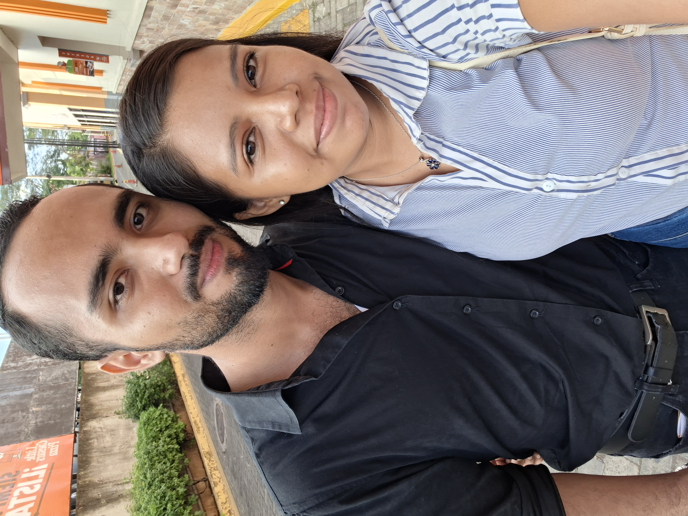

Nuestra historia sigue escribiéndose cada día.
Quise terminar este libro hablándote desde el corazón. La canción “All In” me recuerda mucho a nosotros, porque habla de entregarse por completo, incluso cuando no todo es fácil. Y eso es exactamente lo que siento.
En estos seis meses hemos vivido momentos hermosos, pero también peleas, silencios, dudas, miedos y un sinfín de situaciones que pudieron alejarnos. Sin embargo, aquí seguimos. Tal vez no somos perfectos, pero hemos aprendido a quedarnos, a hablar, a entendernos y a avanzar juntos.
Cada día me convenzo más de que vale la pena intentarlo contigo. Hay días sencillos que, por estar a tu lado, se vuelven especiales. Hay sonrisas tuyas que cambian mi ánimo por completo, y hay abrazos tuyos que se sienten como hogar.
Cuando la canción dice “I’d go all the way for you”, pienso en todo lo que estaría dispuesta a hacer por esta relación. Cuando dice “I’d rather lose it all if it ain’t you and I”, entiendo que lo más valioso para mí no son las cosas, sino lo que construimos juntos. Y cuando termina diciendo “I’m giving you all in”, siento que describe exactamente mi manera de amarte: con todo, sin reservas y con el corazón completo.
No sé qué nos espera en el futuro, pero sí sé lo que siento hoy. Y hoy puedo decirte, con toda sinceridad, que te amo. Te amo en los días buenos y en los difíciles. Te amo en nuestras risas y en nuestras diferencias. Te amo porque contigo quiero seguir creciendo, aprendiendo y soñando.
Gracias por estos seis meses, por cada recuerdo, por cada esfuerzo y por cada paso que hemos dado juntos. Ojalá este sea solo el comienzo de una historia mucho más larga.
“Te amo profundamente, y cada día estoy más segura de que quiero seguir escribiendo mi historia contigo.”